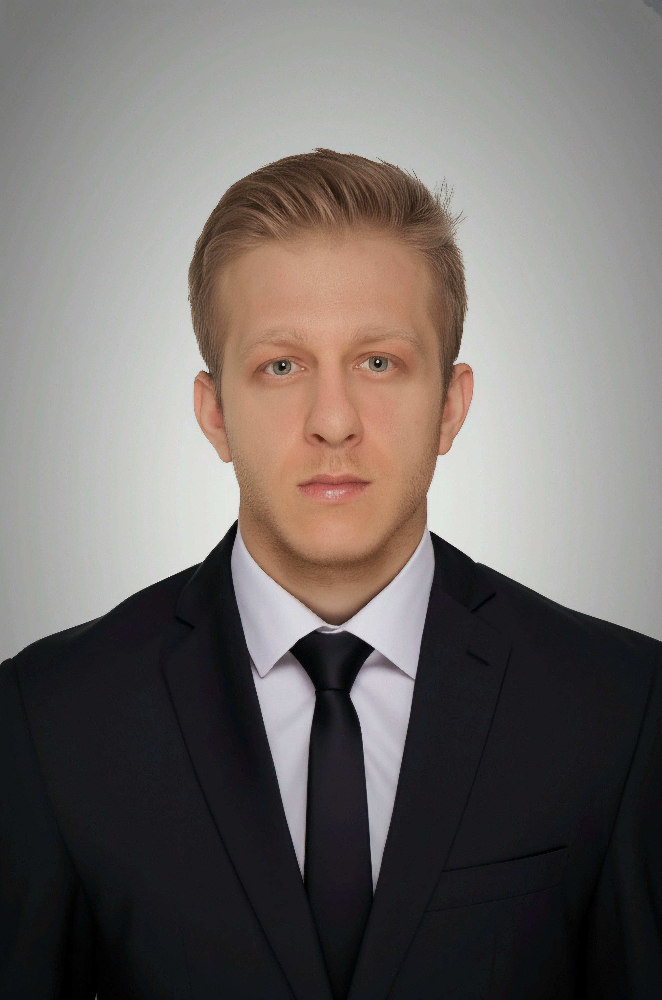

Mehmet Ceylan
Beden eğitiminde öğrencilerin neler hissettiğini (keyif, gurur, sıkılma, kaygı) ve öğretimin, özellikle sunduğu çeşitliliğin, öğrencilerin motivasyonu ve derse katılımıyla nasıl ilişkili olduğunu araştırıyorum.
- Araştırma Görevlisi, Beden Eğitimi ve Spor Öğretmenliği Bölümü, Spor Bilimleri Fakültesi, Kırıkkale Üniversitesi
- Visiting Research Scholar, Division of Kinesiology & Health, University of Wyoming, 2026–2027
Sitenin diğer bölümleri şimdilik yalnızca İngilizce. İngilizce siteye geç
Noktalı alt çizgili ifadeler uzman onayı bekliyor.